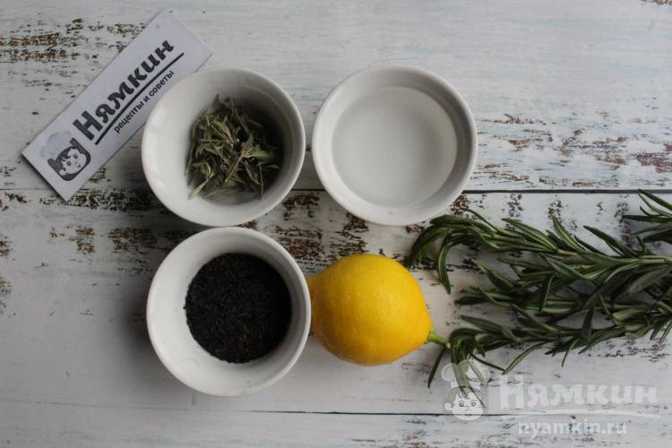
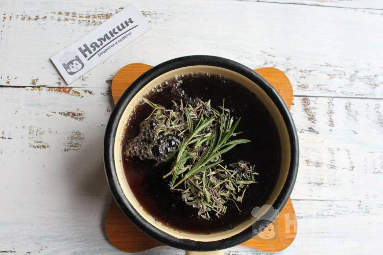
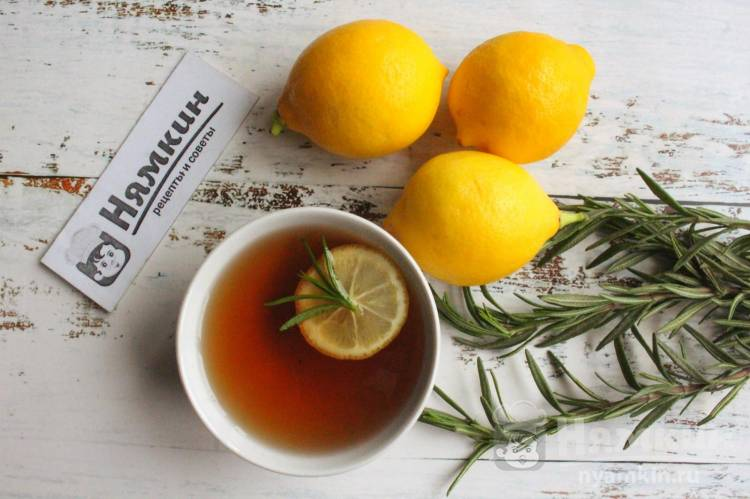

Горячие напитки
Горячие напитки являются наиболее важными напитками в питании человека. Горячие напитки необходимы для организма и содержат компоненты, поддерживающие активность и бодрость человеческого организма. К горячим напиткам относятся напитки: чай, кофе, какао и горячий шоколад. Они содержат кальций, белки, витамины.
Как приготовить "Черный чай с розмарином, чабрецом и лимоном"
Ингридиенты
Вода – 1 л Черный чай –1 ч.л. Чабрец сушеный – 1 ч.л. Лимон – 1 /2 шт. Розмарин – 3 веточки
Способ приготовления:
Подготовим продукты. Розмарин и лимон промоем
В воду добавляем черный чай, доводим воду до кипения.
Добавляем в чай розмарин и чабрец. Снова доводим напиток до кипения, оставляем посуду с огня и настаиваем чай 15-ть минут. Готовый напиток можно процедить, можно все ингредиенты оставить в напитке для дальнейшего настаивания, это по желанию.
Если вы хотите подать чай очень горячим, то снова доводим его до кипения и переливаем в чайник для подачи. Кружочки лимона можно добавить при подаче, а можно добавить лимон с травами, чтобы он настаивался. Это очень душисто и полезно.
<Приятного чаепития!